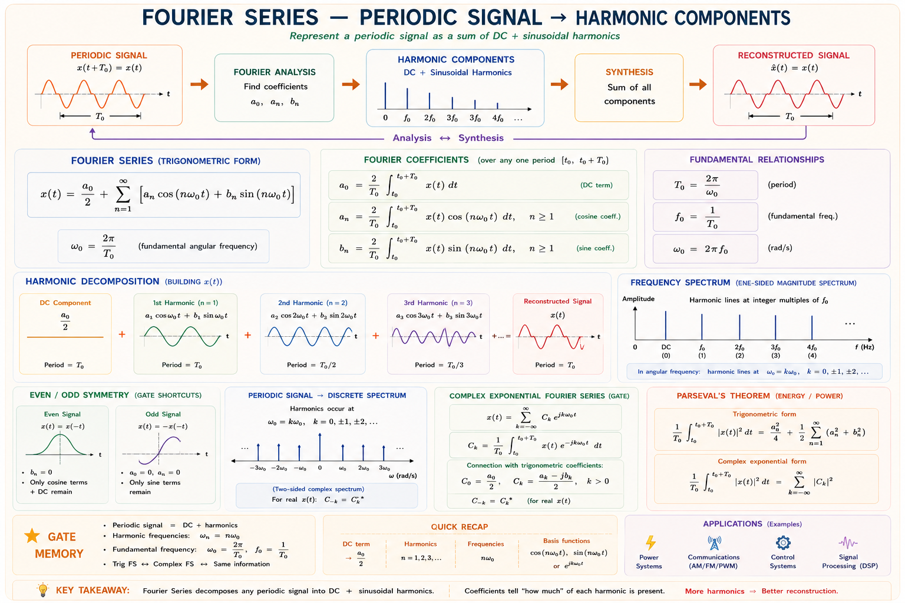
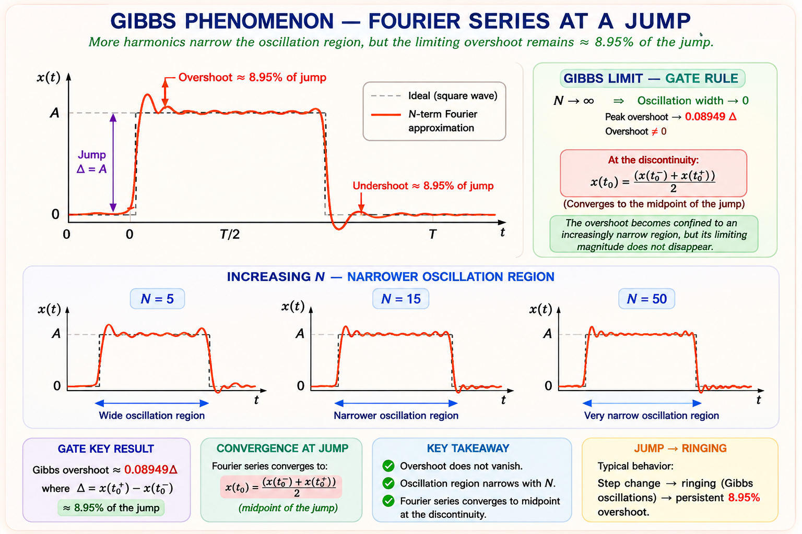
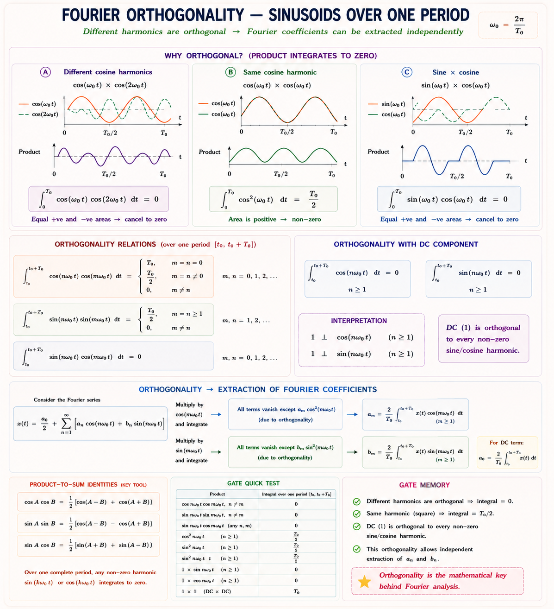
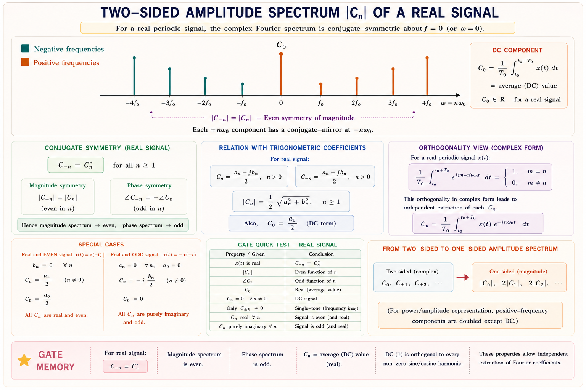
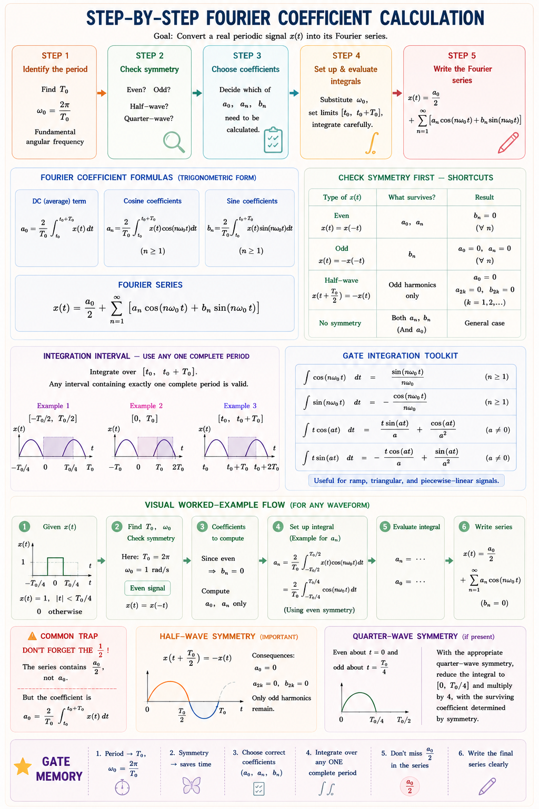
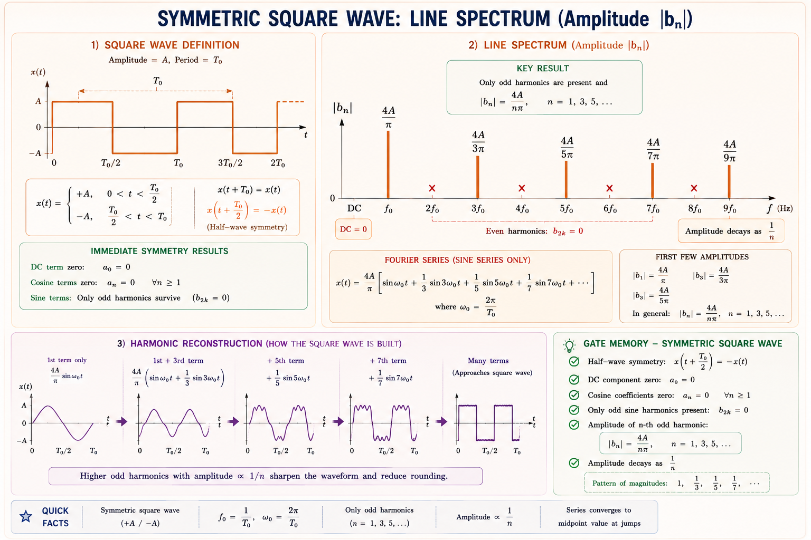
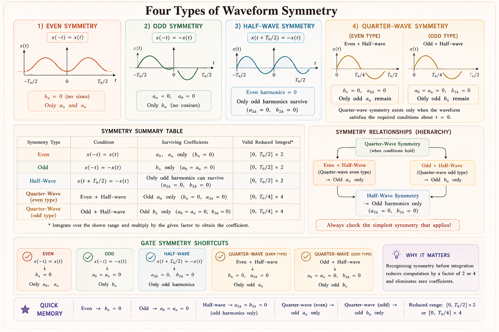

Trigonometric and exponential Fourier series, Dirichlet conditions, symmetry properties, Parseval's theorem, and coefficient computation — complete GATE, IES, and PSU coverage with full derivations, original diagrams, and solved problems based on Oppenheim, Haykin, and Lathi.
Imagine you are an electrical engineer trying to analyse the waveform produced by a thyristor-controlled rectifier. The output is a strange, periodic but non-sinusoidal waveform. How do you find the current through each component? How do you predict harmonics that heat up motors or trip protective relays?
The answer is the Fourier Series. Any periodic signal, no matter how complicated, can be expressed as an infinite sum of sinusoids — each at a different frequency. Once you do that, you can handle each sinusoid separately using the familiar phasor method, then superimpose the results. This is why Fourier series is the cornerstone of power quality analysis, communication systems, and control systems.
Fourier series converts a time-domain problem (complex waveform) into a frequency-domain problem (sum of simple sinusoids). Every linear system can then be analysed frequency by frequency — a divide-and-conquer strategy that makes the intractable tractable.

Not every periodic function has a valid Fourier series. The Dirichlet conditions, named after the German mathematician Peter Gustav Lejeune Dirichlet, specify exactly when a periodic function \(x(t)\) can be represented by its Fourier series.[1]
D1 — Absolute integrability: \(\int_{T_0} |x(t)|\,dt < \infty\) — the signal
must have finite energy over one period.
D2 — Finite extrema: \(x(t)\) must have a finite number of maxima and
minima in any finite interval.
D3 — Finite discontinuities: \(x(t)\) must have a finite number of finite
discontinuities per period. At each discontinuity, the series converges to the average of
the left and right limits.
Practically speaking, all physically realisable periodic signals satisfy Dirichlet conditions. The series does not converge at jump discontinuities but converges to the midpoint — this is perfectly acceptable for engineering purposes.
When a Fourier series is truncated at N terms and the signal has jump discontinuities, the partial sum exhibits an overshoot of about 8.9% of the jump magnitude at the discontinuity, regardless of how many terms are included. This is the Gibbs phenomenon and is a favourite GATE concept question.

The trigonometric Fourier series represents a periodic signal \(x(t)\) with period \(T_0\) as a sum of cosine and sine terms at integer multiples (harmonics) of the fundamental frequency \(\omega_0 = 2\pi/T_0\).[1]
The coefficients are found by exploiting the orthogonality of sinusoids over a full period. Multiplying both sides by \(\cos(m\omega_0 t)\) or \(\sin(m\omega_0 t)\) and integrating over one period extracts exactly one coefficient at a time.
a₀ = average (DC) value of x(t) over one period.
aₙ = amplitude of the cosine at nth harmonic — captures the even part of the
signal.
bₙ = amplitude of the sine at nth harmonic — captures the odd part of the
signal.
Fundamental frequency f₀ = 1/T₀ Hz; angular ω₀ = 2πf₀ rad/s.

The \(a_n\) and \(b_n\) form can be combined into a single cosine with phase, called the compact or polar form. This is often more intuitive because it directly shows amplitude and phase of each harmonic.[2]
The trigonometric form uses sines and cosines; the exponential (complex) Fourier series uses complex exponentials \(e^{jn\omega_0 t}\). This is more compact mathematically and connects directly to the Fourier Transform, making it indispensable in communications and signal processing.[1]
For a real signal x(t): \(C_{-n} = C_n^*\) (complex conjugate symmetry).
\(|C_{-n}| = |C_n|\) — amplitude spectrum is even. \(\angle C_{-n} = -\angle C_n\) — phase
spectrum is odd.
Relationship to trigonometric: \(C_0 = a_0\), \(\;C_n = \tfrac{1}{2}(a_n - jb_n)\), \(\;C_{-n} =
\tfrac{1}{2}(a_n + jb_n)\) for \(n \geq 1\).

The GATE examination consistently tests the ability to compute Fourier coefficients for standard waveforms — rectangular pulse trains, triangular waves, half-wave rectified sine, and full-wave rectified sine. Here is a systematic approach.[3]

| Waveform | a₀ (DC) | aₙ | bₙ | Special Values |
|---|---|---|---|---|
| Square Wave (odd sym., amp A) | 0 | 0 | \(\dfrac{4A}{n\pi}\) (odd n only) | b₁=4A/π, b₃=4A/3π… |
| Rectangular Pulse (duty cycle δ=τ/T₀) | Aδ | \(\dfrac{2A}{n\pi}\sin(n\pi\delta)\) | 0 (even sym.) | Envelope ~ sinc(nδ) |
| Triangular Wave (odd sym., amp A) | 0 | 0 | \(\dfrac{8A}{n^2\pi^2}\) (odd n only) | Coefficients ∝ 1/n² |
| Half-wave Rectified Sine (amp A) | A/π | \(\dfrac{2A}{\pi(1-n^2)}\) (n even) | b₁=A/2, others 0 | a₂ = 2A/3π |
| Full-wave Rectified Sine (amp A) | 2A/π | \(\dfrac{4A}{\pi(1-4n^2)}\) (all n) | 0 | No odd harmonics |
| Sawtooth Wave (amplitude A) | 0 | 0 | \(\dfrac{-2A}{n\pi}(-1)^n\) | All harmonics present |
The Fourier series can be visualised as a line spectrum — discrete vertical lines at multiples of the fundamental frequency. The height of each line is the amplitude of that harmonic. This gives an instant picture of the signal's frequency content.

A square wave needs infinite harmonics for perfect reconstruction. In practice, a bandwidth of \(B \approx \frac{1}{\tau}\) (where τ is the pulse width) captures 90% of the signal energy. This is why digital communication systems require wider bandwidth than the data rate alone suggests — the sharp edges of a bit stream contain high-frequency harmonics.
Symmetry is the single most powerful tool for computing Fourier coefficients quickly. Recognising the symmetry of a waveform immediately tells you which coefficients are zero — saving significant integration effort.[2]

Before computing any integral, always check symmetry. In most GATE problems, symmetry eliminates half the unknowns immediately. A square wave centred at origin is odd → no cosines, no DC. A triangular wave centred at origin is also odd → same conclusion. A cosine wave is even → no sines.
Parseval's theorem connects the time-domain average power of a periodic signal to the sum of squares of its Fourier coefficients. It is the energy conservation law of the Fourier world — total power equals the sum of powers at individual harmonics.[1]
Total average power = (DC power) + (power in 1st harmonic) + (power in 2nd harmonic) + … Each harmonic contributes independently. This is why we can compute Total Harmonic Distortion (THD) from the Fourier coefficients of the supply voltage or current.
THD is a direct application of Parseval's theorem. For a periodic current \(i(t)\) with fundamental \(I_1\) and harmonics \(I_n\):
1. The factor of ½ applies only to AC terms: \(P = a_0^2 + \tfrac{1}{2}\sum(a_n^2+b_n^2)\). The
DC term \(a_0^2\) has no factor of ½.
2. For exponential form: \(P = \sum|C_n|^2\) — the \(|C_n|\) already have the factor of ½ built
in (since \(C_n = \tfrac{1}{2}(a_n - jb_n)\) for n≥1).
3. Do not confuse power (average of |x|²) with energy (integral of |x|²); periodic signals have
finite power but infinite energy.
Fourier Series applies to periodic signals → produces a
discrete (line) spectrum at multiples of f₀.
Fourier Transform applies to aperiodic signals → produces a
continuous spectrum.
Many students confuse these in GATE questions. A periodic signal does NOT have a Fourier
Transform in the conventional sense (only in the distributional sense with impulses).
Step 1: \(\omega_0 = 2\pi/T_0 = \pi\) rad/s. The waveform is even (symmetric about t = 0), so \(b_n = 0\).
Step 2: \(a_0 = \frac{1}{T_0}\int_{-\tau/2}^{\tau/2} A\,dt = \frac{A\tau}{T_0} = \frac{A \times 0.5}{2} = \frac{A}{4}\)
Step 3: For n ≥ 1 (using even symmetry, integrate 0 to T₀/2 and double):
Step 4: Values: \(a_1 = \frac{2A}{\pi}\sin(45°) = \frac{A\sqrt{2}}{\pi} \approx 0.450A\), \(a_2 = \frac{A}{\pi}\sin(90°) = \frac{A}{\pi} \approx 0.318A\), \(a_3 = \frac{2A}{3\pi}\sin(135°) = \frac{A\sqrt{2}}{3\pi} \approx 0.150A\), \(a_4 = 0\) (sin(180°)=0).
Key insight: The duty cycle is δ = τ/T₀ = 0.25. The DC value is Aδ = A/4. The spectrum envelope follows a sinc pattern with nulls at n = 1/δ = 4, 8, 12, …
Identifying coefficients: \(a_0 = 3\), \(a_1 = 4\), \(b_1 = 1\) (from the −sin at ω₀=2π), \(a_2 = 2\), \(b_2 = 0\).
(a) Average Power by Parseval's theorem:
(b) RMS value: \(X_{rms} = \sqrt{P} = \sqrt{19.5} \approx \mathbf{4.416 \text{ V}}\)
(c) Power at fundamental (n=1): \(P_1 = \frac{1}{2}(a_1^2+b_1^2) = \frac{1}{2}(16+1) = \mathbf{8.5 \text{ W}}\)
The waveform is odd and has half-wave symmetry, so only odd harmonics contribute. Using the analysis equation:
Evaluating each integral and simplifying:
For odd n: \((1-(-1)^n) = 2\), so \(\boxed{C_n = \frac{2A}{jn\pi}}\) (odd n only). For even n: \(C_n = 0\). Check: \(C_1 = \frac{2A}{j\pi} = \frac{-j2A}{\pi}\), so \(|C_1| = \frac{2A}{\pi}\), and the one-sided amplitude is \(\frac{4A}{\pi}\) — consistent with the trigonometric result \(b_1 = 4A/\pi\).
A periodic signal x(t) satisfies x(t + T₀/2) = −x(t). Which of the following statements is true about its Fourier series?
Solution: The condition x(t + T₀/2) = −x(t) is the definition of half-wave symmetry. All even harmonics (n = 2, 4, 6, …) are zero. The DC value is also zero. Answer: (B).
If the Fourier series of a periodic voltage v(t) is \(v(t) = 10 + 20\cos(\omega_0 t) + 10\cos(2\omega_0 t)\), find the average power delivered to a 1 Ω resistor.
Solution: Using Parseval's: \(P = a_0^2 + \frac{1}{2}a_1^2 + \frac{1}{2}a_2^2 = 100 + \frac{400}{2} + \frac{100}{2} = 100 + 200 + 50 = \mathbf{350 \text{ W}}\). Answer: (C).
The trigonometric Fourier series of a real signal has a₁ = 6 and b₁ = −8. The magnitude and phase angle of the exponential Fourier coefficient C₁ are, respectively:
Solution: \(C_1 = \tfrac{1}{2}(a_1 - jb_1) = \tfrac{1}{2}(6 + j8) = 3 + j4\). \(|C_1| = \sqrt{9+16} = 5\). \(\angle C_1 = \arctan(4/3) = 53.1°\). Answer: (B).
The overshoot that occurs near a jump discontinuity in the partial Fourier series expansion of a signal, regardless of the number of terms included, is known as:
Solution: The Gibbs phenomenon produces an overshoot of ~8.9% at jump discontinuities that does not diminish as N → ∞ (though the region narrows). Answer: (C).
A supply current has Fourier components: I₁ = 10 A (fundamental), I₃ = 4 A (3rd harmonic), I₅ = 2 A (5th harmonic). Find the Total Harmonic Distortion (THD).
Solution: \(\mathrm{THD} = \frac{\sqrt{I_3^2+I_5^2}}{I_1} = \frac{\sqrt{16+4}}{10} = \frac{\sqrt{20}}{10} = \frac{4.47}{10} = \mathbf{44.7\%}\). Answer: (C).
Even symmetry → only A (cosine) coefficients survive (a₀, aₙ —
bₙ = 0).
Odd symmetry → only B (sine) coefficients and a₀ = 0
(bowls are asymmetric, like sine waves).
Even Adds [cosines], Odd Bowls [sines only].
Half-wave symmetry → Odd harmonics Win (even
harmonics are zero).
HOW to remember: Half-wave → Odd Win.
Think of \(C_n = \frac{1}{T_0}\int x(t) e^{-jn\omega_0 t}\,dt\) as "listening" to the signal at
frequency nω₀.
The \(e^{-jn\omega_0 t}\) is a "tuning fork" — multiplying and averaging extracts only the nω₀
component from the noisy mix (orthogonality does the magic).
\(x(t) = a_0 + \sum[a_n\cos(n\omega_0 t)+b_n\sin(n\omega_0 t)]\)
\(a_0=\frac{1}{T_0}\int x\,dt\), \(a_n=\frac{2}{T_0}\int x\cos\,dt\), \(b_n=\frac{2}{T_0}\int
x\sin\,dt\)
\(x(t)=\sum_{-\infty}^{\infty}C_n e^{jn\omega_0 t}\)
\(C_n=\frac{1}{T_0}\int x(t)e^{-jn\omega_0 t}\,dt\)
\(C_0=a_0\), \(C_n=\tfrac{1}{2}(a_n-jb_n)\) for n≥1
Even: bₙ = 0 only
Odd: aₙ = a₀ = 0 only
Half-wave: even harmonics = 0
QW (Even+HW): odd aₙ only
\(P = a_0^2 + \tfrac{1}{2}\sum(a_n^2+b_n^2)\)
\(P = \sum_{-\infty}^{\infty}|C_n|^2\)
\(X_{rms} = \sqrt{P}\)
Conditions: finite integral, finite extrema, finite discontinuities.
At discontinuity: series → average of left+right limits.
Gibbs overshoot ≈ 8.9% (fixed, not ↓ with N)
Square wave: bₙ = 4A/nπ (odd n)
Rect pulse: aₙ = (2A/nπ)sin(nπδ)
Triangular: bₙ = 8A/n²π² (odd n)
\(\omega_0 = 2\pi/T_0 = 2\pi f_0\)
Type any Fourier Series question — coefficient calculation, symmetry doubt, GATE problem, THD, Parseval's theorem application, or concept clarification.